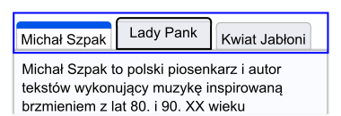

Intencja
Celem tego kryterium sukcesu jest zapewnienie, że wskaźnik fokusu klawiatury będzie wyraźnie widoczny i dostrzegalny. Wygląd fokusu jest ściśle powiązany z KS 2.4.7 Widoczny fokus i KS 1.4.11 Kontrast elementów nietekstowych. Widoczny fokus wymaga istnienia widocznego wskaźnika fokusu, gdy komponent ma fokus klawiatury; kryterium Widoczny fokus określa minimalny poziom widoczności. Tam, gdzie kryterium Kontrast elementów nietekstowych wymaga, aby komponent miał odpowiedni kontrast z tłem w każdym ze swoich stanów, kryterium wymaga wystarczającego kontrastu samego wskaźnika fokusu.
Dla osób widzących z niepełnosprawnością manualną, które używają klawiatury lub urządzenia korzystającego z interfejsu klawiatury (takiego jak przełącznik lub wprowadzanie głosowe), informacja o aktualnym miejscu fokusu ma kluczowe znaczenie. Widoczny fokus musi odpowiadać także potrzebom użytkowników słabowidzących, którzy również mogą polegać na klawiaturze.
Wskaźnik fokusu klawiatury może przybierać różne formy. To kryterium sukcesu zachęca do stosowania ciągłego konturu wokół komponentu interfejsu użytkownika, który ma fokus, ale dopuszcza inne typy wskaźników, które są co najmniej tak samo duże.
W tym dokumencie objaśniającym omówione zostaną wymagania dotyczące minimalnej powierzchni, wymagania dotyczące kontrastu kolorów, a na koniec wymienione zostaną niektóre wyjątki dotyczące dotyczące oprogramowania użytkownika.
Minimalna powierzchnia
Pierwsza część kryterium sukcesu określa minimalną powierzchnię wskaźnika fokusu:
- jest co najmniej tak duży, jak obszar obwodu o grubości 2 pikseli CSS komponentu lub podkomponentu bez fokusu.
Określa jedynie minimalną powierzchnię wskaźnika fokusu. Nie wymaga, aby wskaźnik fokusu był dosłownie konturem o grubości 2 pikseli CSS, a jedynie, aby wskaźnik był co najmniej tak duży.
Jednak najprostszym sposobem spełnienia wymagań dotyczących rozmiaru jest użycie wskaźnika fokusu, który ma ciągły kontur o grubości 2 pikseli CSS.
Piksel CSS jest tym, czego programiści używają w deklaracjach CSS, takich jak „width”: 200px”. Jest niezależny od urządzenia i nie należy go mylić z pikselami urządzenia, które różnią się w zależności od fizycznej gęstości pikseli.
W pozostałej części tego dokumentu piksele CSS są oznaczone jako „px”.
Używanie ciągłego konturu
Najłatwiejszym i najczęstszym sposobem spełnienia tego wymagania jest użycie ciągłego konturu wokół komponentu. Kontur musi mieć grubość co najmniej 2px. Poniższa ilustracja przedstawia minimalnie gruby wskaźnik fokusu, w którym pas białych pikseli o grubości 2 pikseli tworzących tło strony wokół przykładowego przycisku został zmieniony na czarny.
W przypadku komponentów nieprostokątnych definicja „konturu” umożliwia autorom użycie jednego z następujących typów obrysu:
- ciągła linia otaczająca kształt, lub
- ciągła linia otaczająca minimalną obwiednię kształtu
Na przykład przycisk w kształcie gwiazdy może wykorzystywać wskaźnik fokusu zgodny z kształtem gwiazdy lub wskaźnik fokusu zgodny z obwiednią gwiazdy. W poniższych przykładach zostały już wybrane te same trzy gwiazdki, a fokus jest na trzeciej gwiazdce. W pierwszym przykładzie zastosowano wskaźnik fokusu, który odpowiada kształtowi skupionej gwiazdy. W pierwszym przykładzie zastosowano wskaźnik fokusu, który odpowiada kształtowi gwiazdki, która ma fokus. Drugi wykorzystuje prostokątny wskaźnik.


Nieznaczne odsunięcie wskaźników od komponentu, który ma fokus, jak w powyższych przykładach, nie jest wymagane, aby spełnić wymagania dotyczące minimalnej powierzchni w ramach kryterium sukcesu, ale może pomóc w zwiększeniu widoczności wskaźników. W CSS powszechnie stosuje się do tego właściwości outline i outline-offset.
Najmniejszy możliwy wskaźnik grubości 2 pikseli CSS, który nadal stanowi „obwód”, to linia ciągła, która pojawia się wewnątrz komponentu naprzeciw jego zewnętrznej krawędzi, na przykład poprzez użycie właściwości CSS border. Wskaźniki umieszczone głębiej w komponencie (nie bezpośrednio przy zewnętrznej krawędzi komponentu) muszą być grubsze niż 2 piksele CSS, aby spełnić wymagania dotyczące minimalnego rozmiaru.
Należy pamiętać, że mogą obowiązywać różne wymagania dotyczące kontrastu elementów nietekstowych w zależności od tego, czy wskaźnik fokusu jest odsunięty od krawędzi komponentu, wstawiony w nią lub przy niej. Zobacz poniżej sekcję Związek z kontrastem elementów nietekstowych.
Inne kształty wskaźników
To kryterium sukcesu nie wymaga, aby wskaźniki fokusu miały ciągły kontur. Można zastosować inne kształty, o ile spełniają wymagania dotyczące minimalnej powierzchni.
Minimalny obszar wskaźnika fokusu dla kontrolki to obszar obwodu kontrolki o grubości 2 pikseli CSS (lub jej minimalnej obwiedni) w stanie kontrolki bez fokusu. Na przykład, jeśli kontrolka jest prostokątem o szerokości 90 pikseli i wysokości 30 pikseli, obszar obwodu o grubości 2 pikseli CSS jest różnicą pomiędzy obszarami:
- prostokątem o wymiarach 92 na 32 piksele (o 1 piksel większy ze wszystkich stron) oraz
- prostokątem o wymiarach 88 na 28 pikseli (o 1 piksel mniejszy ze wszystkich stron).
Daje to minimalny obszar (92px * 32px) – (88px * 28px) = 480px2.
Niektóre ogólne wzory na obwody typowych kształtów o grubości 2 pikseli CSS to:
- Prostokąt o szerokości w i wysokości h
- 4h + 4w
- Okrąg o promieniu r
- 4𝜋r
- Zaokrąglony prostokąt o szerokości w, wysokości h i promieniu obramowania r
- 4h + 4w – (16 – 4𝜋)r
Jeśli musisz zastosować skomplikowaną matematykę, aby ustalić, czy wskaźnik fokusu jest wystarczająco duży, prawdopodobnie jest to znak, że powinieneś zamiast tego użyć większego wskaźnika. Im bardziej widoczna zmiana po ustawieniu fokusu na elemencie, tym łatwiej jest ją zobaczyć.
W poniższych 2 przykładach zastosowano przycisk o wymiarach 90 pikseli szerokości i 30 pikseli wysokości, a minimalny wymagany obszar wynosi 480 pikseli2:
Preferuj stosowanie technik wskaźników fokusu, które skalują się zarówno z szerokością, jak i wysokością kontrolki z fokusem. W przeciwnym razie, jeśli elementy sterujące zmieniają rozmiar w różnych odmianach strony (na przykład w przypadku projektu responsywnego), wskaźnik może w niektórych odmianach spełniać wymagania dotyczące obszaru, ale w innych nie. Na przykład na powyższym rysunku, jeśli szerokość dwóch wyróżnionych prostokątów nie skalowałaby się wraz ze wzrostem szerokości przycisku, przestałaby spełniać minimalne wymagania dotyczące obszaru, gdyby przycisk musiał się powiększyć, aby pomieścić dłuższą etykietę.
Innym sposobem osiągnięcia wymaganej powierzchni jest zmiana wyglądu całego elementu, na przykład poprzez zmianę jego koloru. Może to być skuteczne w przypadku zestawu blisko rozmieszczonych przycisków. Poniższy przykład ilustruje to z 5 gwiazdkami; środkowa gwiazdka jest wypełniona ciemniejszym kolorem, aby wskazać fokus. Jednak znacznie trudniej jest wykryć taki wskaźnik fokusu, gdy komponenty nie znajdują się blisko siebie i dlatego nie można ich łatwo porównać. Dla użytkowników korzystających z powiększenia porównanie komponentów znajdujących się nawet stosunkowo blisko siebie może być trudne, dlatego nie jest to uważane za dobrą praktykę.

Łącza śródliniowe
Jeśli łącze śródliniowe jest podzielone na wiele linii, niektóre metody tworzenia wskaźnika fokusu powodują różne wyniki w przeglądarkach. Kontur CSS oddzielnie otacza każdą część łącza, która dzieli się na wiele linii. Jest to zdecydowanie najpopularniejsza technika CSS do wskazywania fokusu i daje wynik spełniający definicję minimalnej obwiedni, ponieważ każda część jest solidnie otoczona fokusem. Obramowanie CSS podzieli obwódkę na części łącza, co spowoduje niezamkniętą ramkę dla każdej linii łącza. Definicja minimalnej obwiedni stwierdza, że fokus łącza można ocenić tak, jakby całe łącze znajdowało się w jednej linii, dlatego też uważa się, że ramka o grubości 2 pikseli spełnia wymagania dotyczące minimalnego obszaru. Dlatego też, jeśli spełnione są wymagania dotyczące kontrastu, każda z tych metod może zapewnić wystarczający wskaźnik fokusu.

outline solidnie i całkowicie ogranicza każdą część łącza, dzięki czemu spełnia definicję obwodu.

border CSS na łączu wieloliniowym nie obejmuje oddzielnych części łącza, definicja minimalnej obwiedni pozwala ocenić ją tak, jakby znajdowała się w pojedynczej linii, więc kwalifikuje się również jako obwód.
Zmiana kontrastu
Druga część wymagań dotyczących wskaźnika Kryterium sukcesu stwierdza, że obszar wskaźnika:
- ma współczynnik kontrastu co najmniej 3:1 między tymi samymi pikselami w stanie „ma fokus” i „nie ma fokusu”
Wymaganie to mierzy zmianę kontrastu między tymi samymi pikselami w różnych stanach. Różni się to od kryteriów sukcesu kontrastu tekstu i kontrastu elementów nietekstowych, które mierzą kontrast pomiędzy różnymi sąsiadującymi pikselami w jednym stanie na raz.
3:1 to minimalny dopuszczalny współczynnik zmiany kontrastu, ale im większa jest zmiana kontrastu między stanami, tym łatwiej użytkownikom zobaczyć wskaźnik fokusu. Autorów zachęca się do stosowania jak największego współczynnika zmiany kontrastu.
Na poniższej ilustracji przedstawiono minimalnie kontrastujący wskaźnik fokusu, na którym niektóre białe piksele tworzące tło strony zostały zmienione na kolor średnio szary o współczynniku kontrastu 3:1 w stosunku do oryginalnej bieli. Zachęcamy autorów do przekraczania minimalnych wymagań dotyczących wyglądu fokusu. Na przykład ciemnoniebieskie linie na rysunkach 2 i 3 są znacznie bardziej widoczne.

Kiedy komponent zmienia się i zawiera wskaźnik fokusu, zmianę tę można zmierzyć jako zmianę kontrastu koloru. Na przykład, jeśli do przycisku na niebieskim tle zostanie dodany żółty kontur, zmiana koloru nastąpi z niebieskiego na żółty. Zmianę tę można zmierzyć niezależnie od tego, czy wskaźnik fokusu znajduje się na tle wokół komponentu, czy na tle wewnątrz komponentu.
Jeśli kontrolka otrzymująca fokus zmieni swoje tło (kolor wypełnienia) na kolor, który kontrastuje w stosunku mniejszym niż 3:1 z oryginalnym tłem, kryterium zmiany kontrastu nie będzie spełnione.
Jeśli zmiana tła jest wystarczająca, jest to metoda spełnienia kryterium.
Częściowo kontrastujące wskaźniki
Nie jest konieczne, aby cały wskaźnik fokusu miał zmianę kontrastu 3:1. Wystarczy, że tylko część wskaźnika spełni wymóg zmiany kontrastu, o ile kontrastująca część wskaźnika spełnia wymóg minimalnej powierzchni.
Przy obliczaniu, czy wskaźnik fokusu spełnia wymóg dotyczący minimalnej powierzchni, należy uwzględnić jedynie część wskaźnika spełniającą wymóg zmiany kontrastu.
Gradienty
Jeśli wskaźnik fokusu ma gradient, zasadą jest zmierzenie kontrastu zmienionego obszaru i zignorowanie jakiejkolwiek części gradientu, która ma współczynnik zmiany kontrastu mniejszy niż 3:1.
Jeśli wyeliminujesz obszar, w którym zmiana kontrastu jest mniejsza niż 3:1, możesz obliczyć powierzchnię pozostałych części wskaźnika, aby określić, czy wskaźnik spełnia wymagania dotyczące minimalnej powierzchni.
Niektóre przykłady w tym dokumencie to zrzuty ekranowe elementów. Ze względu na utratę rozdzielczości tych obrazów rzeczywisty kolor pikseli może różnić się od oryginału. W związku z tym służą one celom ilustracyjnym i nie należy ich sprawdzać piksel po pikselu pod kątem wystarczającego kontrastu.
Niektóre projekty mają strony z niejednolitym obrazem tła pokrywającym całość (lub część) strony lub wykorzystują efekty przewijania paralaksy, które dają niemal nieskończoną liczbę kombinacji kolorów, jeśli strona jest przewijana i/lub wprowadzane są zmiany do rozmiaru widocznego obszaru strony (rzutni).
Jeśli kontrast zmieniających się kolorów tła jest na tyle bliski, że należy je przetestować dla każdej kombinacji, wówczas prawdopodobnie nie spełnią one potrzeb osób słabowidzących w przypadku niektórych kombinacji przewijania i prawdopodobnie również nie przyniosą oczekiwanych rezultatów w niektórych kombinacjach. W takich przypadkach łatwym rozwiązaniem byłoby użycie dwukolorowego wskaźnika fokusu lub innego mechanizmu wskazującego fokus, takiego jak pełne pole z obramowaniem, aby zagwarantować wystarczający kontrast pomiędzy różnymi obrazami tła lub tłem gradientowym.
Możliwe jest wykorzystanie wzorów wizualnych, takich jak paski zmieniające miejsca, w celu zamaskowania wskaźnika zmiany fokusu. Nie uważa się tego jednak za widoczny wskaźnik.
Związek z kontrastem elementów nietekstowych
Wskaźniki fokusu to informacje wizualne wymagane do zidentyfikowania stanu komponentu interfejsu użytkownika. Oznacza to, że podlegają one KS 1.4.11 Kontrast elementów nietekstowych oraz KS 2.4.13 Wygląd fokusu.
W połączeniu z KS 2.4.7 Widoczny fokus, KS 1.4.11 Kontrast elementów nietekstowych wymaga, aby wizualny wskaźnik fokusu komponentu miał wystarczający kontrast w stosunku do sąsiednich kolorów, gdy komponent ma fokus, z wyjątkiem sytuacji, gdy wygląd komponentu jest określony przez program użytkownika i nie jest modyfikowany przez autora.
Różnica między wymaganiami kontrastu w kryterium Wygląd fokusu a kryterium Kontrast elementów nietekstowych jest następująca:
- Kryterium Wygląd fokusu wymaga, aby wskaźniki fokusu zmieniały kontrast pomiędzy stanami „ma fokus” i „nie ma fokusu”.
- Kryterium Kontrast elementów nietekstowych wymaga, aby wskaźniki fokusu miały sąsiadujący kontrast między wskaźnikiem (w stanie „ma fokus”) a sąsiadującymi kolorami niebędącymi wskaźnikami.
Ponadto kryterium Kontrast elementów nietekstowych nie określa żadnych wymagań dotyczących rozmiaru i ma nieco inne zasady określające, kiedy dozwolone są wyjątki.
Więcej szczegółów i przykładów można znaleźć w sekcji Związek z widocznością fokusu w Objaśnienie KS 1.4.11 Kontrast elementów nietekstowych.
Komponent z fokusem klawiatury
Preambuła tego kryterium sukcesu brzmi: „Gdy komponent interfejsu użytkownika ma fokus klawiatury…” Fokus klawiatury to punkt interakcji dla osoby korzystającej z klawiatury. W środowiskach z interfejsem obsługiwanym za pomocą klawiatury, fokus klawiatury można przesuwać po interfejsie, aby wchodzić w interakcję z różnymi komponentami. Komponent, z którym wchodzi się w interakcję, jest ma fokus.
WCAG definiuje komponent interfejsu użytkownika jako „część treści postrzeganą przez użytkowników jako pojedynczy element sterujący dla odrębnej funkcji”. Ponieważ różni użytkownicy mogą odmiennie postrzegać elementy sterujące, mogą istnieć pewne różnice w interpretacji tego, co stanowi zarówno pojedynczy element sterujący, jak i odrębną funkcję. Dzieje się tak szczególnie wtedy, gdy coś wizualnie prezentuje się w sposób, który może różnić się od tego, jak zostało to stworzone od strony programistycznej. Tam, gdzie nie ma rdzennego komponentu HTML, na którym można oprzeć projekty, mogą występować duże różnice w sposobie przedstawiania komponentów i ich wskaźników fokusu. Co więcej, niektóre komponenty mają komponenty podrzędne, które mogą przyjąć fokus, np. elementy menu.
Niemniej jednak, dla tego kryterium sukcesu uzyskano spójne wyniki od różnych testerów, wykorzystując sam wskaźnik fokusu jako miernik tego, co stanowi komponent, z którym wchodzi się w interakcję. W przypadku złożonych komponentów trzy typowe wskaźniki fokusu są następujące:
- Wskaźnik fokusu tylko wokół całego komponentu
- Wskaźniki fokusu wokół komponentu i podrzędnego komponentu
- Wskaźnik fokusu tylko wokół podrzędnego komponentu
Każdy z nich zostanie omówiony przy użyciu listy z zakładkami jako znanego złożonego komponentu.
Wskaźnik fokusu tylko wokół całego komponentu
Gdy wskaźnik fokusu jest wyświetlany tylko wokół całej listy zakładek, użytkownik otrzymuje wskazówki, by traktować tę listę jako pojedynczy komponent użytkownika. Znajdujące się w nim elementy zakładek są wizualnie rozróżniane pomiędzy stanami wybranym i niewybranymi (a wizualne wskaźniki stanu zaznaczenia muszą spełniać kryteria podane w KS 1.4.11 Kontrast elementów nietekstowych).
Posiadanie wskaźnika fokusu tylko wokół całości jest możliwe, gdy nie ma potrzeby posiadania wybranego podrzędnego komponentu, podczas gdy inny podrzędny komponent ma fokus. W przypadku listy zakładek, która synchronizuje zawartość panelu kart z dowolną aktywną kartą, w danym momencie można wybrać tylko jeden element karty, a ponieważ wybrana karta jest uważana za aktywną, oddzielny wskaźnik fokusu jest zbędny.
Wynik: wskaźnik fokusu na grupie musi spełniać wymagania tego kryterium sukcesu.
Grupa przycisków opcji i widżet z oceną gwiazdkową, z których każdy wykorzystuje wyłącznie wskaźnik fokusu całego komponentu, dostarczają działających przykładów różnych złożonych komponentów, które spełniają podstawowe wymagania tego kryterium sukcesu. W przykładzie z ocenami w postaci gwiazdek użytkownicy mogą zwiększyć ocenę o 1/2 gwiazdki. Wskaźnik fokusu dla każdej 1/2 gwiazdki jest nie tylko niepotrzebny, ale w rzeczywistości byłby trudny do osiągnięcia bez zagmatwania interakcji.
Wskaźniki fokusu wokół komponentu i podrzędnego komponentu

W przypadku listy zakładek, która nie synchronizuje treści panelu zakładek z wybraną zakładką, musi istnieć wskaźnik fokusu dla podrzędnego komponentu elementu panelu kart. Wynika to z faktu, że element zakładki z fokusem może być inny niż wybrany element.
Użytkownik może przejść do listy zakładek, która w tej implementacji ma prostokąt fokusu wokół całej listy zakładek, a także prostokąt wokół elementu karty (konwencjonalnie aktualnie wybranego elementu). Wskaźnik fokusu obejmujący całość pomaga we wskazaniu użytkownikowi klawiatury, że jest to złożony komponent, który ma własną interakcję. Użytkownik może następnie przenosić fokus pomiędzy niewybranymi i wybranymi elementami zakładek – z których każda z kolei ma swój własny wskaźnik fokusu – przed aktywacją jednej z nich, co następnie powoduje jej wybranie i skupienie oraz aktualizację panelu kart w celu dopasowania.
W tym scenariuszu albo wskaźnik fokusu na grupie, albo wskaźnik podrzędnego komponentu muszą spełniać wymagania tego kryterium sukcesu. Aby uniknąć nadmiernego nakazu, kryterium sukcesu pozwala autorom wybrać to, co ma największy sens. Ogólnie rzecz biorąc, jeśli konieczne jest skupienie fokusu na podrzędnych komponentach, należy je uwzględnić zamiast wskaźnika grupowego.
Wynik: wskaźnik fokusu dla elementu zakładki spełnia wymagania tego kryterium sukcesu. Wskaźnik fokusu na liście zakładek nie musi spełniać wymagań.
Suwak do wybierania kolorów stanowi działający przykład innego złożonego komponentu, który pokazuje fokus głównie na podkomponencie. W tym przypadku podkomponent kciuka w suwaku ma wskaźnik fokusu o wystarczającym rozmiarze i kontraście, aby spełnić wymagania wystarczającego obszaru. Wokół całego suwaka jest również delikatny fokus, ale nie trzeba go oceniać, aby spełnić to kryterium sukcesu.
Wskaźnik fokusu tylko wokół podrzędnego komponentu
Tę samą niezsynchronizowaną listę zakładek można również zaimplementować jako coś, co pokazuje fokus tylko na elementach karty, a nie na całości. Zachowanie jest takie samo jak w poprzednim przykładzie, ale wokół listy zakładek nigdy nie jest umieszczony wskaźnik fokusu. Taka interakcja jest akceptowalna, ale nie jest najlepszą praktyką, ponieważ wymaga większego zrozumienia od użytkownika dysponującego mniejszą ilością informacji. Na przykład niektóre wskazówki wizualne dotyczące listy zakładek i elementów kart (oraz panelu kart) mogą być niejasne. Ponadto użytkownicy klawiatury mogą początkowo nie rozumieć oczekiwanej interakcji z klawiaturą.
Wynik: wskaźnik fokusu elementu karty musi spełniać wymagania tego kryterium sukcesu w ocenie fokusu zarówno w przypadku wybranych, jak i niewybranych elementów karty.
Funkcjonalny przykład fokusu skupionego na zakładce opartej wyłącznie na podkomponentach ma wskaźnik, który jest wystarczająco duży (co najmniej czterokrotność krótszego boku) z wystarczającym kontrastem, aby spełnić kryterium sukcesu obszaru fokusu.
Gdzie coś, na czym skupiony jest fokus, nie jest komponentem interfejsu użytkownika
Niektóre strony zawierają bardzo duże obszary edycji, takie jak internetowe implementacje edytorów tekstu i edytorów kodu. W przeciwieństwie do elementu textarea, który jest komponentem interfejsu użytkownika, te duże obszary edycji zazwyczaj nie spełniają definicji komponentu interfejsu użytkownika; nie są „postrzegane przez użytkowników jako pojedyncza kontrolka dla odrębnej funkcji”. Zapewnienie wskaźników fokusu wokół takich obszarów edycji może nadal być dla niektórych korzystne; jeżeli jednak obszar nie jest postrzegany jako pojedyncza kontrolka, nie jest on objęty tym kryterium sukcesu. Strona internetowa nadal będzie musiała zapewniać punkt wstawiania (wskaźnik daszka) w takich obszarach edycji, aby spełnić wymagania punktu KS 2.4.7 Widoczny fokus.
Niektóre nieobsługiwane elementy mogą przyjmować fokus (np. element nagłówka będący celem łącza pomijającego). Jednakże preambuła tego kryterium sukcesu odnosi się do komponentów interfejsu użytkownika; kryterium sukcesu ma zastosowanie tylko wtedy, gdy element z fokusem można obsługiwać za pomocą klawiatury.
Wyjątki
Istnieją dwie sytuacje, w których nie trzeba oceniać wyglądu fokusu:
- wskaźnik fokusu nie może być regulowany przez autora
- autor nie zmienił efektów domyślnych ustawień programu użytkownika
Pierwszy wyjątek: wskaźnik fokusu nie może być regulowany przez autora
Wskaźnik fokusu jest określany przez oprogramowanie użytkownika i autor nie może go regulować
Niektóre komponenty lub technologie mogą nie pozwalać autorowi na dostosowanie wskaźnika fokusu. Dzieje się tak w przypadku elementów HTML select (zarówno pojedynczego, jak i wielokrotnego wyboru), w których autor nie może dostosować wizualnych ustawień wyboru i fokusu. W tym przypadku kryterium sukcesu nie ma zastosowania.

select w programie użytkownika nie może być modyfikowana przez autora, więc przechodzi test niezależnie od jakości wskaźnika fokusu
Drugi wyjątek: domyślny wskaźnik i tło nie są modyfikowane
Wskaźnik fokusu i kolor tła wskaźnika nie zostały zmodyfikowane przez autora
Jeżeli wskaźnik fokusu i tło za wskaźnikiem skupienia nie zostaną zmodyfikowane przez autora, kryterium sukcesu nie ma zastosowania.
Celem tego wyjątku jest zmniejszenie obciążenia autorów poprzez umożliwienie im polegania na domyślnych wskaźnikach dostarczanych przez programy użytkownika (przeglądarki). Gdyby wszystkie programy użytkownika zapewniały dobre wskaźniki fokusu, autorzy mogliby skoncentrować wysiłki na innych kwestiach związanych z dostępnością. Niestety, domyślne wskaźniki fokusu przeglądarek różnią się w zależności od komponentu, przeglądarki oraz urządzeń i systemów operacyjnych, a domyślne wskaźniki fokusu w niektórych przeglądarkach mogą być trudne do zauważenia (np. kropkowany kontur o wielkości 1 piksela). Z tego powodu większość autorów zastępuje domyślne ustawienia przeglądarki, aby przezwyciężyć te braki i stworzyć bardziej jednolite doświadczenie użytkownika, niezależnie od przeglądarki.
Niektórzy twórcy przeglądarek ulepszają swoje domyślne wskaźniki fokusu, aby były bardziej widoczne. W miarę jak coraz więcej przeglądarek będzie przyjmować ustawienia domyślne spełniające główne kryteria tego kryterium sukcesu, autorzy będą mogli uzyskać lepsze wskaźniki fokusu bez konieczności dostosowywania.
Modyfikowanie tła wskaźnika fokusu
Domyślne wskaźniki fokusu przeglądarki mogą być trudniejsze do zauważenia, jeśli autor zmodyfikuje piksele bezpośrednio przylegające do wskaźnika (powszechnie określane jako jego tło), poprzez umieszczenie komponentu na górze obrazu lub tła gradientowego lub zmianę domyślnego białego koloru tła strony, na przykład przy użyciu niebieskiego tła w połączeniu z niebieskim domyślnym wskaźnikiem przeglądarki. Z tego powodu, jeśli autor zmienia piksele bezpośrednio przylegające do domyślnego wskaźnika fokusu, wyjątek dotyczący programu użytkownika nie ma zastosowania, a autor będzie musiał sprawdzić, czy spełniają one wymagania dotyczące rozmiaru i kontrastu określone w tym kryterium sukcesu.
Zmiana atrybutu koloru tła elementu body jest w większości implementacji jednym ze sposobów zmiany pikseli bezpośrednio sąsiadujących ze wskaźnikiem. Jednakże określenie wartości bieli (#FFFFFF) nie unieważnia tego wyjątku, ponieważ, jak ustalono w trzeciej uwadze definicji współczynnika kontrastu, przyjmuje się, że domyślnym („nieokreślonym”) kolorem jest biały.
Ponadto, jeśli przeglądarka domyślnie udostępnia wskaźnik wewnątrz komponentu, autorzy mogą potencjalnie zmniejszyć widoczność, zmieniając kolor komponentu (który w takim scenariuszu jest kolorem tła wskaźnika fokusu). Na przykład, jeśli domyślny wskaźnik przycisku ma kolorową wewnętrzną ramkę, autorzy mogą negatywnie wpłynąć na wygląd fokusu, nadając kolorowi przycisku lub jego obramowaniu bez fokusu kolor o podobnej jasności. Z tego powodu ten wyjątek dotyczący programu użytkownika może zostać spełniony tylko wtedy, gdy autor nie zmodyfikuje domyślnego wskaźnika fokusu oraz nie zmodyfikuje jego tła.